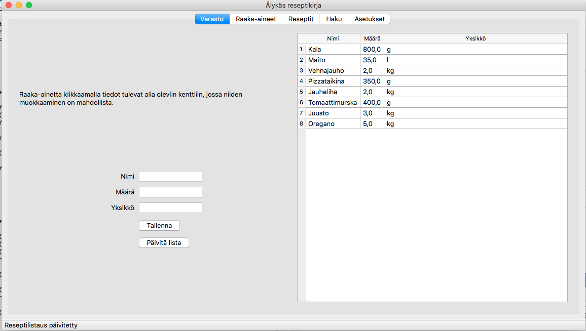
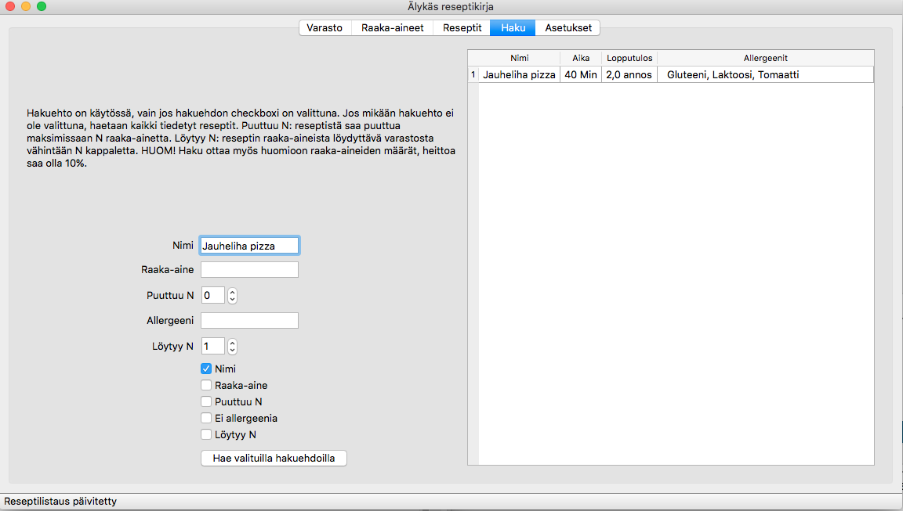
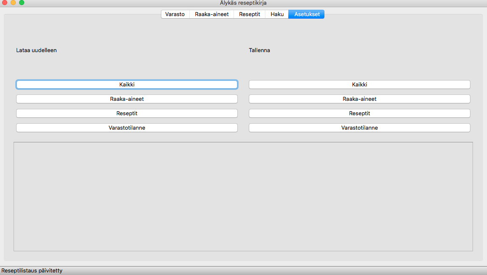
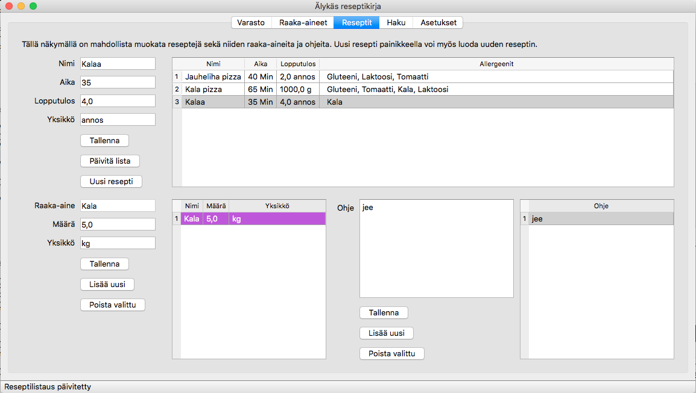

Käyttöohje¶
Ohjelman vaatimukset:
- Python 3.x
- PyQt5
Ohjelma käynnistetään ajamalla mainGUI.py tiedosto python3:lla. Ohjelman käynnistyessä ladataan reseptit, raaka-aineet ja varastolistaus tiedostoista ’reseptit.txt’, ’raaka_aineet.txt’ ja ’varasto.csv. Näiden tiedostojen struktuuri on ihmiselle helposti luettavissa sekä muokattavissa.
Ohjelman käynnistyttyä aukeaa ikkuna, jossa on viisi välilehteä. Varasto, raaka-aineet ja reseptit -välilehdillä on listattuna kaikki ohjelmaan juuri ladatut kyseiset raaka-aineet/resepetit/varastotilanne. Näillä välilehdillä on myöskin mahdollista muokata näiden tietoja. Taulukon riviä klikkaamalla tulevat kyseisen rivin tiedot automaattisesti tekstikenttiin, josta niitä voi muokata. Jokaisella välilehdellä on lyhyt käyttöohje.
Tekstikenttiin pystyy syöttämään vain tiettyjä arvoja, kuten määrä kenttään vain desimaalilukuja. Lähes kaikissa kentissä on kuitenkin myös minimipituus vaatimus, joka käy ilmi vasta tallennettaessa. Huomioitavaa on, että muut tiedot tallentuvat, jos jossakin kentässä onkin virheellinen tieto.
Haku välilehdellä pystyy hakemaan reseptejä eri vaihtoehdoilla tai täysin ilman vaihtoehtoja. Vaikka hakuehdon tekstikentässä lukisi jotain, sitä ei käytetä ellei sitä vastaava checkbox ole ruksattuna.
Asetukset välilehdellä käyttäjä pystyy ladata listoja uudelleen tiedostoista tai tallentamaan ne tiedostoon.
Reseptit näkymä on kaikista ”monimutkaisin” ja siellä on eniten toiminnallisuuksia. Näkymällä voidaan muokata sekä reseptin perustietoja, raaka-aineita että ohjeita. Raaka-aineita ja ohjeita pystyy lisäämään reseptille sekä poistamaan reseptiltä. Näiden lisäksi näkymällä on mahdollista luoda täysin uusi resepti painamalla ”uusi resepti” -painiketta. Tästä painikkeesta avautuu uusi ikkuna, johon annetaan reseptin tiedot. Reseptin ensimmäinen raaka-aine ja ohje annetaan dialogissa, loput lisätään reseptit näkymällä. Cancel painike peruuttaa luonnin, OK painike tallentaa reseptin, sikäli kun tiedot ovat oikeelliset.
Raaka-aineet ja ohjeet valitaan muokattavaksi myös klikkaamalla taulukosta riviä, kuten muillakin näkymillä. Huomioitavaa on, että ”Lisää uusi” sekä ”poista valittu” toiminnot tallentavat muutokset heti. Raaka-aineen nimi muokkauskenttä on tarkoitettu vain uuden raaka-aineen lisäämiseen. Jos nimeä muuttaa ja painaa tallenna, niin nimen muutoksesta ei välitetä.
Ohjelmasta on myös komentorivi versio, jossa on vain osa toiminnallisuuksista sekä sitä on testattu vähemmän. Sen saa toimimaan ajamalla main.py python3:lla.